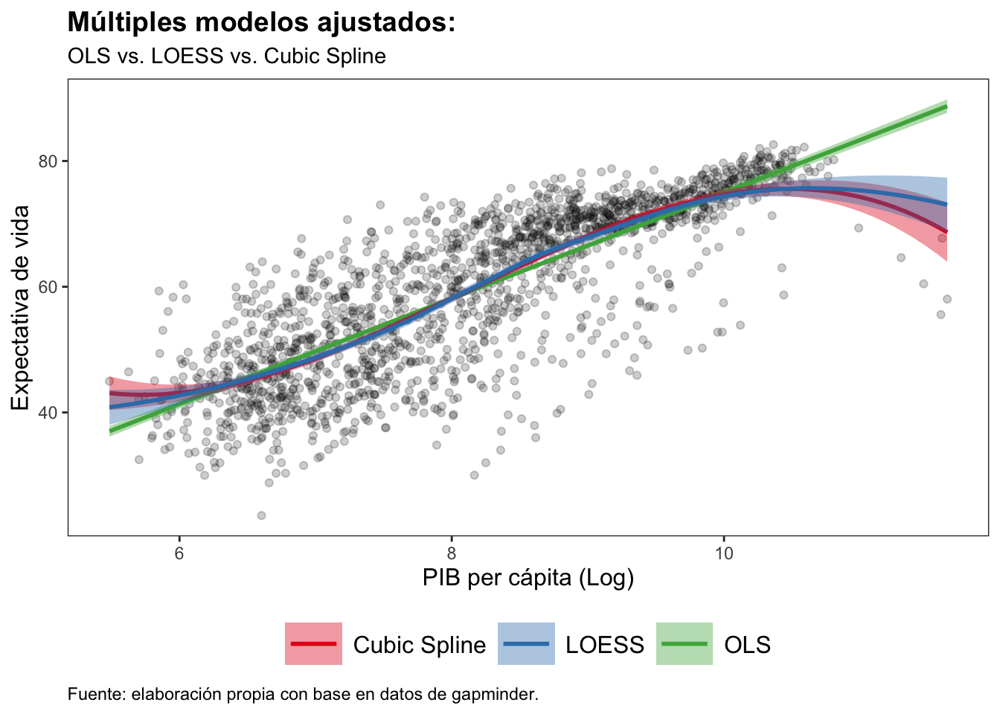
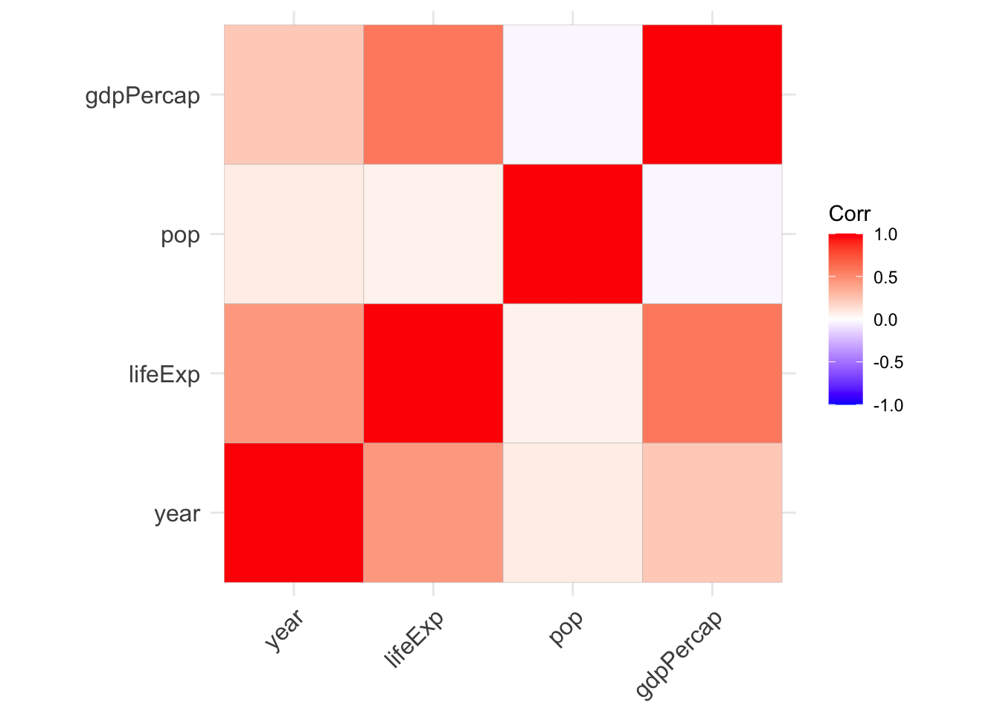
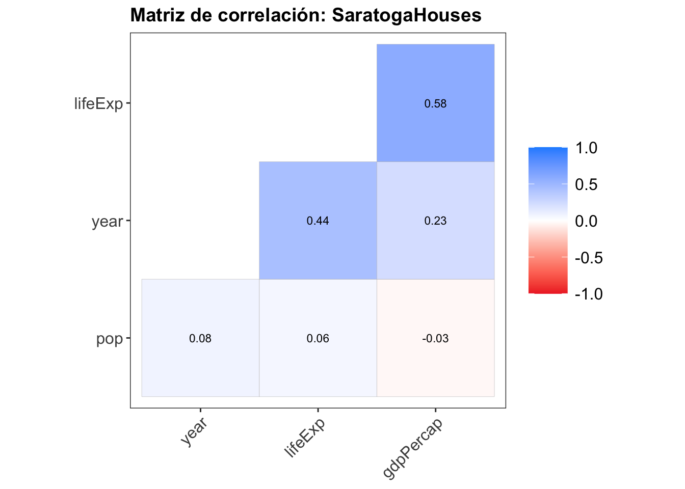
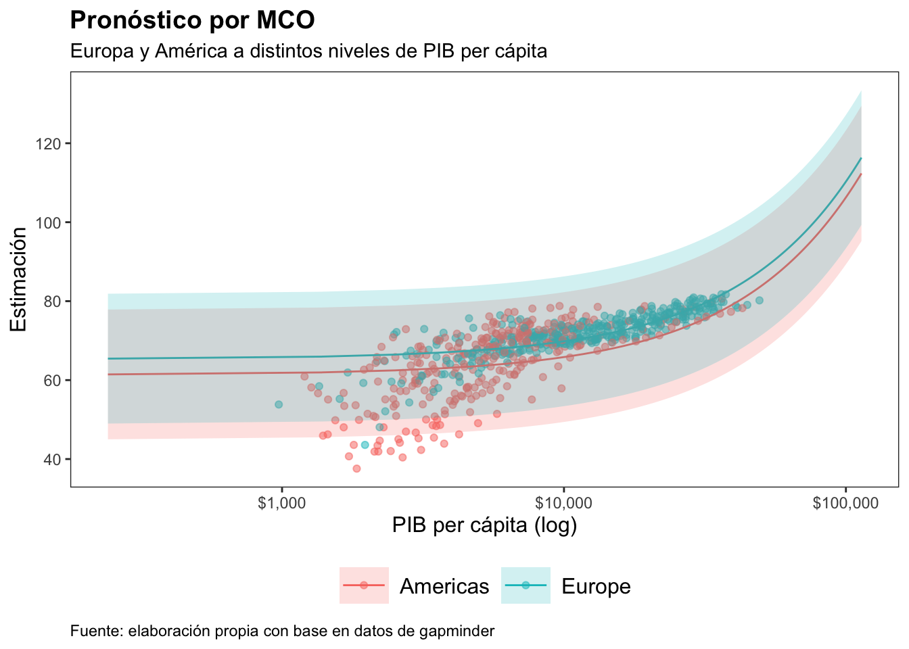
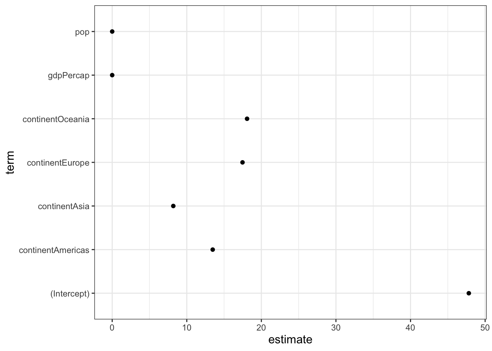
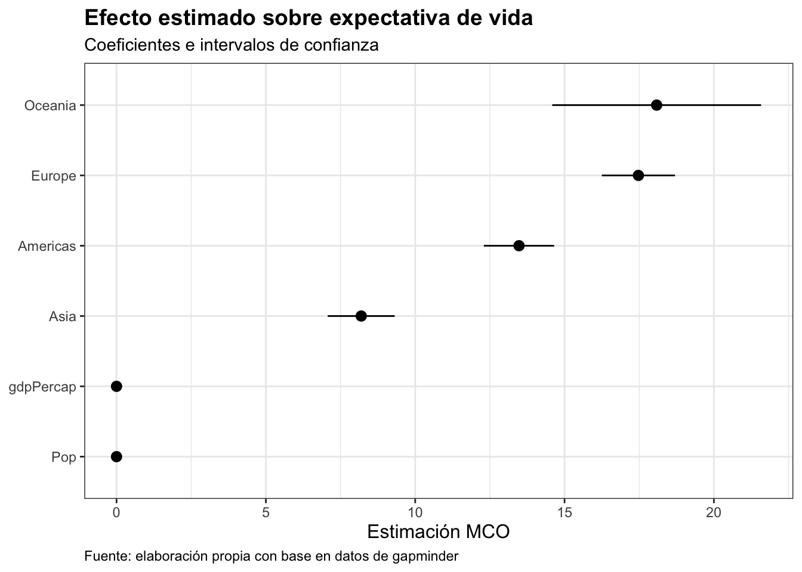
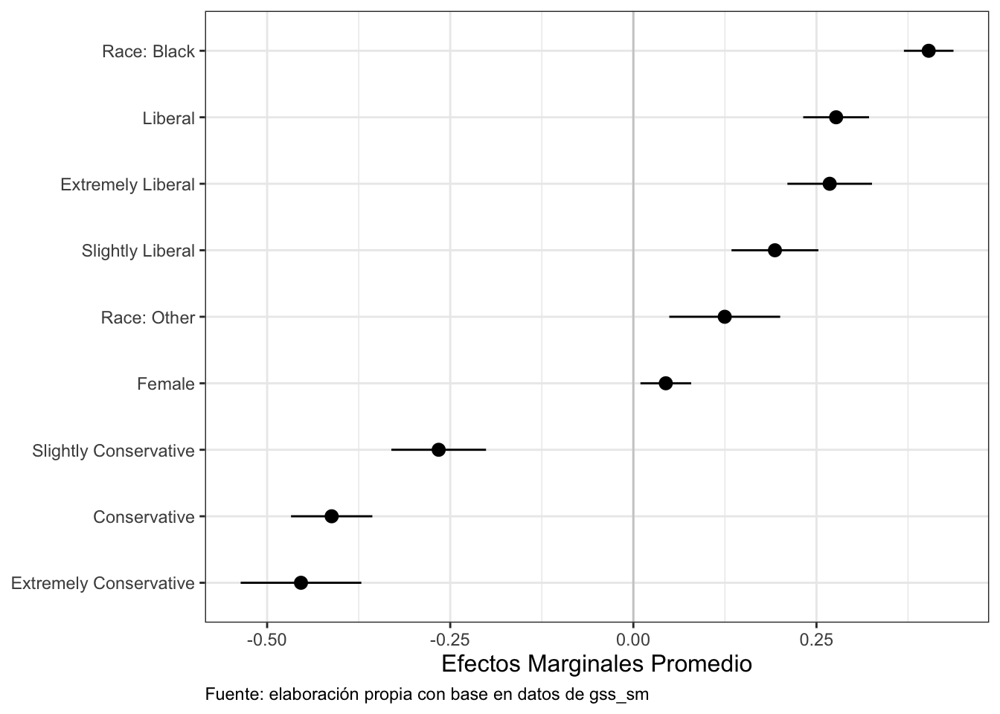

La visualización de datos no únicamente es generar figuras que desplieguen números brutos de un tabulado, o marco de datos. La visualización implica resumir o transformar partes de estos conjuntos de información, y luego graficar los resultados. Los modelos econométricos forman una parte central de este proceso.
Por ejemplo, a partir de una misma relación entre el PIB per cápita, y la expectativa de vida, podemos contar con diferentes modelos cuyos resultados, nos llevarían a gráficos diferentes. En este gráfico, contamos con líneas de ajuste para una regresión robusta, splines cúbicos, y una regresión cuantílica suavizada.
Mirando dentro de modelos econométricos
Un modelo econométrico describe la relación entre una o más variables explicativas, y una o más variables de respuesta. La visualización a través de gráficos puede ayudar a entender estas relaciones. Sin embargo, cubrir los detalles de ajustar modelos econométricos a través de R se encuentra por fuera de los objetivos de este blog. Aquí, en cambio, se discutirán algunas formas de extraer información valiosa, que es fácil de trabajarse a través de ggplot2. El objetivo, por tanto, es tomar objetos almacenados en nuestro entorno, y producir un gráfico apropiado.
Gráficos de correlación
Un gráfico de correlación ayuda a visualizar la relación pareada entre un conjunto de variables cuantitativas, desplegando su fuerza de asociación a través de colores, o sombras.
El siguiente ejemplo se construye con base en datos de [Gapminder], que se enfoca en estadísticas e información sobre desarrollo social, económico y medioambiental, tanto a nivel local, nacional, como global. Esta base de datos, particularmente, cuenta con información de todos los continentes a nivel mundial, entre 1952 y 2007.
En el siguiente código:
- La función
select_ifnos permitirá seleccionar solo las variables cuantitativas dentro de la base de datos. - La función
corcalcula las correlaciones.
- El uso de
use = "complete.obs", elimina todos los casos con valores perdidos.
- La función
roundredondeará los resultados obtenidos a dos decimales.
data <- gapminder::gapminder
# Seleccionamos variables numericas
df <- dplyr::select_if(data, is.numeric)
# Calculamos correlaciones
r <- cor(df, use = "complete.obs")
round(r, 2) year lifeExp pop gdpPercap
year 1.00 0.44 0.08 0.23
lifeExp 0.44 1.00 0.06 0.58
pop 0.08 0.06 1.00 -0.03
gdpPercap 0.23 0.58 -0.03 1.00Ahora, para visualizar las correlaciones, la función ggcorrplot() de la paquetería ggcorrplot será utlizada. Por default, la función crea una gráfica de ggplot, donde el rojo más oscuro indicará correlaciones fuertes positivas, el azul más oscuro indicará correlaciones negativas fuertes, y el color blanco indicará no correlación:
library(ggcorrplot)
ggcorrplot(r)
La función ggcorrplot() cuenta con múltiples opciones de personalización. Sin embargo, más allá de repasar cada una de estas, es importante tener en mente que, un gráfico que muestre una matriz de correlación, debe contar por lo menos:
- Diseño visual claro:
- Colores informativos y graduales que representen magnitud y dirección de la correlación.
- Escala de color comprensible que incluya una barra de escala para mostrar cómo los colores corresponden a los valores del coeficiente de correlación.
- Presentación de datos relevantes:
- Hacer visibles los valores de correlación directamente en las celdas.
- Ordenar las variables de forma que se resalten patrones claros.
- Asegurar que el tamaño de las celdas sea adecuado para que los colores, y valores numéricos sean fáciles de interpretar.
- Foco en información importante:
- Filtrar correlaciones no significativas (por ejemplo, a través de
ggcorrplot(..., insig = "blank")). - Enfocar variables clave resaltando o agrupando aquellas más importnates para evitar sobrecargar el gráfico.
- Contexto y anotaciones:
- Incluir un título descriptivo, asegurándonos que los nombres de las variables sean comprensibles.
- Preferentemente, indicar niveles de significancia.
- Simplicidad y accesibilidad:
- Evitar saturación visual.
- Asegurar que el esquema de colores sea apto para personas con alguna discapacidad visual, utilizando paletas como
viridis.
ggcorrplot(r,
hc.order = TRUE, # Reordenamiento segun corr. similar
type = "lower", # Triangulo inferior de la matriz
lab = TRUE, # Mostrar valores numericos
lab_size = 3, # Tamaño de los valores
colors = c("firebrick2", "white", "dodgerblue"), # Paleta de colores
title = "Matriz de correlación: SaratogaHouses",
ggtheme = jtools::theme_apa())
Modelos de regresión lineal
Los modelos de regresión lineal permiten explorar la relación entre una variable de respuesta cuantitativa, y una variable explicativa, mientras otras medidas permanecen constantes.
En este ejemplo, utilizamos una regresión lineal múltiple por Mínimos Cuadrados Ordinarios (MCO), utilizando la base de datos gapminder. Debido a que esta base tiene una estructura tipo panel (país-año), la especificación empleada vuelve la estimación incorrecta. Sin embargo, por ahora no nos fijaremos en este punto.
Para la estimación, utilizamos la función lm(), cuyo resultado se guardará en un objeto de nombre out.
# Construimos el modelo de regresion lineal multiple
out <- lm(lifeExp ~ gdpPercap + pop + continent,
data = data)
# Visualizamos un resumen de resultados
summary(out)
Call:
lm(formula = lifeExp ~ gdpPercap + pop + continent, data = data)
Residuals:
Min 1Q Median 3Q Max
-49.161 -4.486 0.297 5.110 25.175
Coefficients:
Estimate Std. Error t value Pr(>|t|)
(Intercept) 4.781e+01 3.395e-01 140.819 < 2e-16 ***
gdpPercap 4.495e-04 2.346e-05 19.158 < 2e-16 ***
pop 6.570e-09 1.975e-09 3.326 0.000901 ***
continentAmericas 1.348e+01 6.000e-01 22.458 < 2e-16 ***
continentAsia 8.193e+00 5.712e-01 14.342 < 2e-16 ***
continentEurope 1.747e+01 6.246e-01 27.973 < 2e-16 ***
continentOceania 1.808e+01 1.782e+00 10.146 < 2e-16 ***
---
Signif. codes: 0 '***' 0.001 '**' 0.01 '*' 0.05 '.' 0.1 ' ' 1
Residual standard error: 8.365 on 1697 degrees of freedom
Multiple R-squared: 0.5821, Adjusted R-squared: 0.5806
F-statistic: 393.9 on 6 and 1697 DF, p-value: < 2.2e-16El resultado observado con la función summary() nos da una idea precisa del modelo, aunque no podemos hacer mucho más análisis directo. Por ejemplo, ¿qué pasaría si quisiéramos visualizar algo desde este modelo? La información necesaria para generar un gráfico se encuentra dentro del objeto, aunque esta no es obvia a simple vista.
Tres recomendaciones básicas
Toda figura que se construye con base en modelos econométricos se enfrentan a retos de visualización. En ciencias sociales, la habilidad de crear y presentar con honestidad gráficos basados en modelos, ha avanzado significativamente en los últimos años. Sin embargo, al tiempo en que se ha progresado en formas de visualización, también han crecido los retos inherentes a estas tareas debido a la complejidad de los modelos econométricos.
- Presentar los hallazgos en términos sustantivos Todo gráfico basado en modelos econométricos debe mostrar resultados en formas que son sustancialmente significativos, y directamente interpretables con respecto a las preguntas que el análisis intenta resolver. Por tanto, también es recomendable…
- Presentar los grados de confianza en los gráficos Los modelos vienen con diversas medidas de precisión, confianza, o significancia. Presentar e interpretar estas medidas puede llevar a malas interpretaciones, e incluso sobre-representaciones. Sin embargo, es necesario ser honestos y claros en lo presentado.
- ** Mostrar los datos… siempre que se pueda** Por lo general, presentar resultados de un modelo de regresión lineal múltiple (como en este ejemplo práctico), generalmente significa dos cosas:
- Mostrar el efecto en una tabla con coeficientes asociados a medidas de confianza.
- Mostrar los valores pronosticados de algunas variables dentro de un rango de interés.
- Esto nos permite mostrar datos originales en puntos.
Pronósticos
Ajustado el modelo ahora podemos darnos una idea visual de las estimaciones que produce sobre un rango de variables particulares, manteniendo constantes otros covariantes, en algunos valores sensibles. Para esto seguiremos la función: predict(). ¿Pero qué haremos?
Primero, generaremos una nueva base de datos cuyas columnas tendrán los mismos nombres que las variables en los datos del modelo original, pero ahora sus filas tendrán nuevos valores. Para esto utilizaremos la función expand.grid(). Sin embargo, antes de ello, utilizaremos las funciones min() y max() para obtener los valores mínimos y máximos de gdpPercap, y luego generaremos un vector con 100 elementos entre estos valores. Finalmente, mantendremos la población constante a su mediana, y dejaremos que la variable continent tome sus cinco valores originales posibles.
min_gdp <- min(data$gdpPercap)
max_gdp <- max(data$gdpPercap)
med_pop <- median(data$pop)
pred_df <- expand.grid(gdpPercap = (seq(from = min_gdp,
to = max_gdp,
length.out = 100)),
pop = med_pop,
continent = c("Africa","Americas", "Asia", "Europe",
"Oceania"))
dim(pred_df)[1] 500 3pred_out <- predict(object = out, newdata = pred_df, interval = "predict")
head(pred_out) fit lwr upr
1 47.96863 31.54775 64.38951
2 48.48298 32.06231 64.90365
3 48.99733 32.57670 65.41797
4 49.51169 33.09092 65.93245
5 50.02604 33.60497 66.44711
6 50.54039 34.11885 66.96193Como sabemos que, por construcción, los casos en pred_df, y pred_out corresponden a filas por filas, podemos juntar las dos bases de datos por columna.
pred_df <- cbind(pred_df, pred_out)
head(pred_df) gdpPercap pop continent fit lwr upr
1 241.1659 7023596 Africa 47.96863 31.54775 64.38951
2 1385.4282 7023596 Africa 48.48298 32.06231 64.90365
3 2529.6905 7023596 Africa 48.99733 32.57670 65.41797
4 3673.9528 7023596 Africa 49.51169 33.09092 65.93245
5 4818.2150 7023596 Africa 50.02604 33.60497 66.44711
6 5962.4773 7023596 Africa 50.54039 34.11885 66.96193Ahora sí… El resultado es una base de datos que contiene valores pronosticados del modelo ajustado, para un rango de valores que nosotros especificamos. Con base en esto podemos visualizar los resultados. Debido a que el producto fue para un rango de valores pronosticados de interés, podemos decidir si utilziar todos, o una parte de estos. Por tanto, fijémonos únicamente en el caso de Europa y América.
ggplot(data = subset(pred_df,
continent %in% c("Europe", "Americas")),
aes(x = gdpPercap,
y = fit,
ymin = lwr, ymax = upr,
color = continent,
fill = continent,
group = continent)) +
geom_point(data = subset(data,
continent %in% c("Europe", "Americas")),
aes(x = gdpPercap, y = lifeExp,
color = continent),
alpha = 0.5,
inherit.aes = FALSE) +
geom_line() +
geom_ribbon(alpha = 0.2, color = FALSE) +
ggtitle("Pronóstico por MCO",
subtitle = "Europa y América a distintos niveles de PIB per cápita") +
labs(x = "PIB per cápita (log)", y = "Estimación",
caption = "Fuente: elaboración propia con base en datos de gapminder") +
scale_x_log10(labels = scales::dollar) +
theme_apa(legend.pos = "bottom") +
theme(plot.caption = element_text(hjust = 0))
Estimaciones a nivel componente
El gráfico anterior nos da una idea de los valores pronosticados de expectativa de vida, frente a diferentes niveles de PIB per cápita (en escala logarítmica), tanto para países del continente europeo, como americano. A continuación, lo que haremos será graficar el coeficiente estimado de cada covariante de nuestro modelo, como un punto en un plano donde el eje \(X\), será la estimación, y el eje \(Y\) corresponderá a cada covariante.
out_comp <- tidy(out)
out_comp %>%
round_df()# A tibble: 7 × 5
term estimate std.error statistic p.value
<chr> <dbl> <dbl> <dbl> <dbl>
1 (Intercept) 47.8 0.34 141. 0
2 gdpPercap 0 0 19.2 0
3 pop 0 0 3.33 0.001
4 continentAmericas 13.5 0.6 22.5 0
5 continentAsia 8.19 0.571 14.3 0
6 continentEurope 17.5 0.625 28.0 0
7 continentOceania 18.1 1.78 10.1 0 En este código, lo que hicimos fue tomar el objeto que contiene la estimación del modelo (out), y convertimos los resultados en una base de datos con información a nivel de los covariantes (función tidy()). Finalmente, la segunda parte del código, lo único que hizo fue redondear los decimales a dos posiciones (función round_df).
Ahora sí…
out_comp %>%
ggplot(aes(x = term,
y = estimate)) +
geom_point() +
coord_flip() +
theme_apa(remove.y.gridlines = FALSE,
remove.x.gridlines = FALSE)
Sin embargo, siguiendo nuestras recomendaciones, es importante poder pensar en agregar a estos puntos el intervalo de confianza. Para ello, utilicaremos el siguiente código:
out_conf <- tidy(out,
conf.int = TRUE)
out_conf %>%
round_df()# A tibble: 7 × 7
term estimate std.error statistic p.value conf.low conf.high
<chr> <dbl> <dbl> <dbl> <dbl> <dbl> <dbl>
1 (Intercept) 47.8 0.34 141. 0 47.1 48.5
2 gdpPercap 0 0 19.2 0 0 0
3 pop 0 0 3.33 0.001 0 0
4 continentAmericas 13.5 0.6 22.5 0 12.3 14.7
5 continentAsia 8.19 0.571 14.3 0 7.07 9.31
6 continentEurope 17.5 0.625 28.0 0 16.2 18.7
7 continentOceania 18.1 1.78 10.1 0 14.6 21.6 Por conveniencia, el operador %nin% está disponible a través de la paquetería socviz, y realiza algo opuesto al operador %in%, seleccionando únicamente los términos en el primer vector de caracteres, que no se encuentran en el segundo. Este operador lo utilizaremos para dejar de lado el término del intercepto de la tabla generada.
A continuación, nuestro gráfico evitará el intercepto, y manejará las etiquetas de los covariantes de una mejor forma, evitando casos como continentAmericas. Finalmente, por fin podremos ver las líneas que corresponderán al intervalo de confianza, y ordenaremos estas de mayor a menor:
library(socviz)
Attaching package: 'socviz'The following object is masked from 'package:jtools':
%nin%The following object is masked from 'package:dendroTools':
round_dfout_conf <- subset(out_conf,
term %nin% "(Intercept)")
out_conf$nicelabs <- prefix_strip(out_conf$term, "continent")
out_conf %>%
ggplot(aes(x = reorder(nicelabs, estimate),
y = estimate,
ymin = conf.low, ymax = conf.high)) +
geom_pointrange() +
coord_flip() +
ggtitle("Efecto estimado sobre expectativa de vida",
subtitle = "Coeficientes e intervalos de confianza") +
labs(x = NULL, y = "Estimación MCO",
caption = "Fuente: elaboración propia con base en datos de gapminder") +
theme_apa(remove.x.gridlines = FALSE,
remove.y.gridlines = FALSE) +
theme(plot.caption = element_text(hjust = 0))
Efectos marginales
Hasta ahora, lo que hemos elaborado son visualizaciones sobre estimaciones del efecto promedio de algun coeficiente, manteniendo constantes otros términos de nuestro modelo. Los gráficos de efectos marginales o parciales, en cambio, han obtenido mucha popularidad debido a su utilidad para presentar pronósticos precisos e interpretativos. Particularmente, el interés sobre estos gráficos incrementó gracias dificultades asociadas a la interpretación de términos de modelos de regresión logística, así como a modelos con especificaciones de covariantes en interacción. Para estos, utilizaremos la paquetería margins.
Para ver cómo funcionan estos gráficos, utilicemos ahora la base de datos gss_sm (General Social Survey), y enfoquémonos en la variable binaria: obama. Esta variable tiene dos posibles valores. Cuando la variable es igual a \(1\), el individuo encuestado indicó haber votado por el ex-presidente estadounidense Barack Obama en las elecciones de 2012; y es igual a \(0\) en otros casos.
Con base en esta información, ajustaremos un modelo de regresión logística sobre la variable obama, con age, polviews, race, y sex, como covariantes.
gss_sm$polviews_m <- relevel(gss_sm$polviews, ref = "Moderate")
out_bo <- glm(obama ~ polviews_m + sex*race,
family = "binomial",
data = gss_sm)
summary(out_bo)
Call:
glm(formula = obama ~ polviews_m + sex * race, family = "binomial",
data = gss_sm)
Coefficients:
Estimate Std. Error z value Pr(>|z|)
(Intercept) 0.296493 0.134091 2.211 0.02703 *
polviews_mExtremely Liberal 2.372950 0.525045 4.520 6.20e-06 ***
polviews_mLiberal 2.600031 0.356666 7.290 3.10e-13 ***
polviews_mSlightly Liberal 1.293172 0.248435 5.205 1.94e-07 ***
polviews_mSlightly Conservative -1.355277 0.181291 -7.476 7.68e-14 ***
polviews_mConservative -2.347463 0.200384 -11.715 < 2e-16 ***
polviews_mExtremely Conservative -2.727384 0.387210 -7.044 1.87e-12 ***
sexFemale 0.254866 0.145370 1.753 0.07956 .
raceBlack 3.849526 0.501319 7.679 1.61e-14 ***
raceOther -0.002143 0.435763 -0.005 0.99608
sexFemale:raceBlack -0.197506 0.660066 -0.299 0.76477
sexFemale:raceOther 1.574829 0.587657 2.680 0.00737 **
---
Signif. codes: 0 '***' 0.001 '**' 0.01 '*' 0.05 '.' 0.1 ' ' 1
(Dispersion parameter for binomial family taken to be 1)
Null deviance: 2247.9 on 1697 degrees of freedom
Residual deviance: 1345.9 on 1686 degrees of freedom
(1169 observations deleted due to missingness)
AIC: 1369.9
Number of Fisher Scoring iterations: 6En función de lo anterior, podemos ahora graficar nuestros datos de diferentes formas. Con base en la función margins(), ahora calcularemos los efectos marginales de cada variable:
library(margins)Warning: package 'margins' was built under R version 4.3.3bo_m <- margins(out_bo)
summary(out_bo)
Call:
glm(formula = obama ~ polviews_m + sex * race, family = "binomial",
data = gss_sm)
Coefficients:
Estimate Std. Error z value Pr(>|z|)
(Intercept) 0.296493 0.134091 2.211 0.02703 *
polviews_mExtremely Liberal 2.372950 0.525045 4.520 6.20e-06 ***
polviews_mLiberal 2.600031 0.356666 7.290 3.10e-13 ***
polviews_mSlightly Liberal 1.293172 0.248435 5.205 1.94e-07 ***
polviews_mSlightly Conservative -1.355277 0.181291 -7.476 7.68e-14 ***
polviews_mConservative -2.347463 0.200384 -11.715 < 2e-16 ***
polviews_mExtremely Conservative -2.727384 0.387210 -7.044 1.87e-12 ***
sexFemale 0.254866 0.145370 1.753 0.07956 .
raceBlack 3.849526 0.501319 7.679 1.61e-14 ***
raceOther -0.002143 0.435763 -0.005 0.99608
sexFemale:raceBlack -0.197506 0.660066 -0.299 0.76477
sexFemale:raceOther 1.574829 0.587657 2.680 0.00737 **
---
Signif. codes: 0 '***' 0.001 '**' 0.01 '*' 0.05 '.' 0.1 ' ' 1
(Dispersion parameter for binomial family taken to be 1)
Null deviance: 2247.9 on 1697 degrees of freedom
Residual deviance: 1345.9 on 1686 degrees of freedom
(1169 observations deleted due to missingness)
AIC: 1369.9
Number of Fisher Scoring iterations: 6bo_gg <- as_tibble(summary(bo_m))
prefixes <- c("polviews_m", "sex")
bo_gg$factor <- prefix_strip(bo_gg$factor, prefixes)
bo_gg$factor <- prefix_replace(bo_gg$factor, "race", "Race: ")
bo_gg %>%
select(factor, AME, lower, upper)# A tibble: 9 × 4
factor AME lower upper
<chr> <dbl> <dbl> <dbl>
1 Conservative -0.412 -0.467 -0.356
2 Extremely Conservative -0.454 -0.536 -0.371
3 Extremely Liberal 0.268 0.210 0.326
4 Liberal 0.277 0.232 0.322
5 Slightly Conservative -0.266 -0.330 -0.201
6 Slightly Liberal 0.193 0.134 0.253
7 Race: Black 0.403 0.369 0.437
8 Race: Other 0.125 0.0490 0.200
9 Female 0.0443 0.00967 0.0789# Plot
bo_gg %>%
ggplot(aes(x = reorder(factor, AME),
y = AME, ymin = lower, ymax = upper)) +
geom_hline(yintercept = 0,
color = "gray80") +
geom_pointrange() +
coord_flip() +
labs(x = NULL, y = "Efectos Marginales Promedio",
caption = "Fuente: elaboración propia con base en datos de gss_sm") +
theme_apa(remove.y.gridlines = FALSE,
remove.x.gridlines = FALSE) +
theme(plot.caption = element_text(hjust = 0))